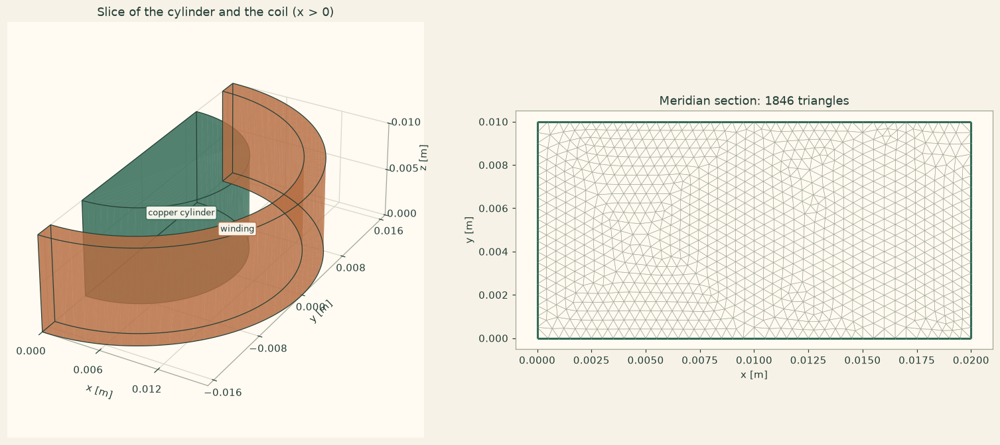

Docs › Examples › Inductive heating of a copper cylinder
Eddy currents and heat transfer · 2D-axisymmetric
Inductive heating of a copper cylinder
A coil at 2 kHz heats a copper cylinder by eddy currents; the falling conductivity of the warming copper raises the induced power.
Run locally with OneSimulation. The example downloads are free. Running them requires an activated runtime. OneSimulation 1.0 · CPython 3.13 on macOS (Apple Silicon), Ubuntu 22.04 (x86-64), and Windows x64. Installation and activation · View pilot plans. Scope of the reference checks.

What it computes
OneSimulation cuts the meridian section from STEP parts and couples the time-harmonic eddy-current model to transient heat conduction in both directions: the loss density heats the copper, the temperature sets its conductivity from a table. A quasi-stationary coupling solves the field in every backward-Euler time step and iterates both until they agree. The script that builds the STEP file comes with the notebook.
What it checks
The starting power matches the Bessel solution for a long cylinder within 0.009 % (1906.9 against 1906.7 W/m); in every 20 s step the heat stored in the cylinder equals 0.999 of the time step times the induced power (the rest warms the air), and after 120 s the mean temperature reaches 275 °C while the power has risen by 35.8 %.
Geometry
The notebook starts at the import of the CAD files inductive_heating_copper_cylinder.step, inductive_heating_copper_cylinder_cylinder.step, inductive_heating_copper_cylinder_winding.step: STEP (AP242), readable by any CAD program, with the names of the faces that the boundary conditions use. Put them next to the notebook.


The geometry script
The script inductive_heating_copper_cylinder_geometry.py builds the geometry with the CAD objects of OneSimulation and writes the files. Change a dimension there, run it, and run the notebook again.
"""Geometry of the OneSimulation example "Inductive heating of a copper cylinder".
Builds, with the CAD objects of OneSimulation, a 10 mm slice of a long coil (inner radius 15 mm,
outer radius 17 mm) around a copper cylinder of 10 mm radius, inside an air region of 20 mm
radius; each part is cut to the side x > 0, so that its section with the plane y = 0 is the
meridian half-plane. Files: inductive_heating_copper_cylinder.step (the air region, the domain),
inductive_heating_copper_cylinder_cylinder.step and inductive_heating_copper_cylinder_winding.step.
"""
from onesim.cad.d3 import AnnularCylinder, Box, Cylinder
height, radius, inner, outer, edge = 0.010, 0.010, 0.015, 0.017, 0.020
side = Box(length=edge, width=2 * edge, height=height, origin=(0.0, -edge, 0.0))
(Cylinder(radius=edge, length=height) & side).save(
"inductive_heating_copper_cylinder.step"
)
(Cylinder(radius=radius, length=height) & side).save(
"inductive_heating_copper_cylinder_cylinder.step"
)
(AnnularCylinder(inner_radius=inner, outer_radius=outer, length=height) & side).save(
"inductive_heating_copper_cylinder_winding.step"
)The notebook
The complete notebook, cell by cell. Run it to produce the figures and the comparison printout.
A long coil (inner radius 15 mm, outer radius 17 mm, 5000 turns per metre) carries an alternating current of 15 A amplitude at 2 kHz around a copper cylinder of radius \(a=10\) mm. The eddy currents heat the cylinder; the conductivity of copper falls with temperature, \(\sigma(T)=\sigma_{20}/(1+\alpha(T-T_{20}))\) with \(\sigma_{20}=5.8\cdot10^7\) S/m and \(\alpha=0.0039\) 1/K, which changes the skin depth and the induced power while the cylinder warms up.
Two models are coupled. The time-harmonic eddy-current model (EddyCurrents) gives the time-averaged loss density \(q=|\mathbf J|^2/(2\sigma)\) for the present temperature; heat conduction (HeatConduction) takes \(q\) as its source,
and returns the temperature to the conductivity. The electromagnetic field settles within microseconds, the temperature within seconds, so QuasiStationaryCoupling solves the field as stationary in every time step of the heat equation and iterates both until they agree.
The domain is the meridian section of inductive_heating_copper_cylinder.step, a 10 mm slice of the long coil; the cylinder and the winding are the sections of _cylinder.step and _winding.step, which the mesh follows. The script inductive_heating_copper_cylinder_geometry.py builds them with the CAD objects of OneSimulation. The slice is thermally insulated, so all induced heat stays in it.
| edge | electromagnetic | thermal |
|---|---|---|
| axis \(r=0\) | axis of the revolved space | axis |
| top, bottom, \(r=20\) mm | field normal (MagneticSymmetry) | no heat flux |
Reference. At the start (uniform 20 °C) the loss per metre is the Bessel result for a long cylinder in a long coil (Lammeraner and Štafl, Eddy Currents, 1966), \(P/\ell=\int_0^a|nI\,kJ_1(kr)/J_0(ka)|^2/(2\sigma)\,2\pi r\,\mathrm dr\), \(k=\sqrt{-\mathrm j\omega\mu_0\sigma}\). With insulated walls the heat stored in the slice must grow in every step by the time step times the induced power (backward Euler).
import numpy as np
from onesim.cad.exchange import load
from onesim.materials import (
IsotropicSolid,
TabulatedLaw,
VacuumPermeability,
regionwise,
)
from onesim.meshing import TriangularMesher
from onesim.numerics import Numerics
from onesim.numerics.coupled_systems import QuasiStationaryCoupling
from onesim.numerics.fem import FiniteElement, Lagrange, RevolvedH1SpaceFactory
from onesim.numerics.field_transfer import FiniteElementEvaluation
from onesim.numerics.linear import ComplexSparseDirect, SparseDirect
from onesim.numerics.nonlinear import FixedPoint
from onesim.numerics.time import BackwardEuler
from onesim.physics.heat_transfer import HeatConduction, HeatFlux
from onesim.physics.magnetostatics import (
Coil,
EddyCurrents,
MagneticSymmetry,
joule_losses,
)
from onesim.results.integration import mean_value
from onesim.simulation import Problem, Simulation
from onesim.simulation.field_connections import FieldCoupling
from onesim.simulation.initial_conditions import InitialValue
from onesim.visualization import plots, theme
from scipy.integrate import quad
from scipy.special import jv
theme.set()Geometry and mesh
section cuts the parts in the plane \(y=0\); the section coordinates are \((r, z)\). The mesh follows the surfaces of the cylinder and the winding and resolves the skin depth (1.5 mm at 2 kHz).
meridian = lambda name: load(f"inductive_heating_copper_cylinder{name}.step").section(
(0, 1, 0)
)
domain, cylinder, winding = meridian(""), meridian("_cylinder"), meridian("_winding")
axis = domain.select(
edges=lambda edge: all(abs(point[0]) < 1e-12 for point in edge.points)
)
height, radius = domain.size[1], cylinder.size[0]
mesh = TriangularMesher(
target_size=0.0008,
embedded_regions=(cylinder.named("cylinder"), winding.named("winding")),
).generate(domain)
fig = plots.figure(1, 2, size=(14, 6))
plots.geometry(
[
load(f"inductive_heating_copper_cylinder{name}.step").named(label)
for name, label in (("_cylinder", "copper cylinder"), ("_winding", "winding"))
],
camera=plots.Camera(elevation=30, azimuth=-60),
title="Slice of the cylinder and the coil (x > 0)",
ax=fig[0],
)
plots.mesh(
mesh,
groups=("all",),
legend=False,
title=f"Meridian section: {mesh.cell_count} triangles",
ax=fig[1],
)
plots.show()Model
Copper properties in the cylinder, air elsewhere; the conductivity is a table over temperature.
frequency, per_metre, current, t20 = 2000.0, 5000, 15.0, 293.15
turns = int(round(per_metre * height))
mu0 = float(VacuumPermeability().evaluate())
table = np.linspace(t20, t20 + 1000.0, 11)
copper = TabulatedLaw(
points=tuple(table), values=tuple(5.8e7 / (1 + 0.0039 * (table - t20))), unit="S/m"
)
eddy = EddyCurrents(
domain=domain.domain(),
permeability=VacuumPermeability(),
frequency=frequency,
conductivity=regionwise({"cylinder": copper}, default=0.0, unit="S/m"),
coils=(Coil(winding, turns=turns, current=current),),
)
heat = HeatConduction(
domain=domain.domain(),
material=IsotropicSolid(
density=regionwise({"cylinder": 8960.0}, default=1.2, unit="kg/m^3"),
specific_heat_capacity=regionwise(
{"cylinder": 385.0}, default=1005.0, unit="J/kg/K"
),
thermal_conductivity=regionwise(
{"cylinder": 400.0}, default=0.026, unit="W/m/K"
),
youngs_modulus=1.0,
poisson_ratio=0.3,
thermal_expansion_coefficient=0.0,
),
)
problem = Problem(
name="Inductive heating",
geometry=domain,
physics=(heat, eddy),
boundary_conditions=(
MagneticSymmetry(boundary=domain.boundaries.all - axis, physics=eddy),
HeatFlux(boundary=domain.boundaries.all, physics=heat, value=0.0),
),
initial_conditions=(InitialValue(heat.temperature, t20),),
couplings=(
FieldCoupling(
source=eddy.loss_density,
target=heat.heating,
transfer=FiniteElementEvaluation(),
),
FieldCoupling(
source=heat.temperature,
target=eddy.temperature,
transfer=FiniteElementEvaluation(),
),
),
)
revolved = lambda: FiniteElement(
element=Lagrange(order=2), quadrature_order=4, provider=RevolvedH1SpaceFactory()
)
step, end = 20.0, 120.0
result = Simulation(
problem=problem,
mesh={heat: mesh, eddy: mesh},
numerics={
heat: Numerics(
spatial=revolved(),
linear_solver=SparseDirect(),
time_integrator=BackwardEuler(),
),
eddy: Numerics(spatial=revolved(), linear_solver=ComplexSparseDirect()),
},
coupling_solver=QuasiStationaryCoupling(
transient_systems=(heat,),
stationary_systems=(eddy,),
iteration=FixedPoint(
relative_tolerance=1e-8, absolute_tolerance=0.0, maximum_iterations=20
),
),
).run(start_time=0.0, end_time=end, time_step=step)Results
Induced power and mean cylinder temperature over time, the heat stored in the cylinder in every step against the time step times the induced power, and the starting power against Bessel. The air holds less than 0.04 % of the heat and is left out of the balance.
times = np.array(result.times)
temperature = result.field(heat.temperature)
losses = np.array([joule_losses(result, eddy, time=t) for t in times])
mean_temperature = np.array(
[float(mean_value(temperature, region=cylinder, time=t)) for t in times]
)
heat_capacity = 8960.0 * 385.0 * np.pi * radius**2 * height
k = np.sqrt(-1j * 2 * np.pi * frequency * mu0 * 5.8e7)
bessel = quad(
lambda s: abs(per_metre * current * k * jv(1, k * s) / jv(0, k * radius)) ** 2
/ (2 * 5.8e7)
* 2
* np.pi
* s,
0,
radius,
limit=200,
)[0]
print(
f"induced power at 20 °C: {losses[0] / height:.3f} W/m, Bessel {bessel:.3f} W/m ({100 * (losses[0] / height / bessel - 1):+.3f} %)"
)
print(
"time [s] power [W] mean cylinder temperature [°C] stored heat of the step / (dt * power)"
)
for n, (t, p, T) in enumerate(zip(times, losses, mean_temperature)):
balance = (
heat_capacity * (T - mean_temperature[n - 1]) / (step * p)
if n
else float("nan")
)
print(f"{t:8.0f} {p:11.4f} {T - 273.15:28.2f} {balance:24.5f}")
print(
f"after {times[-1]:.0f} s the power has risen by {100 * (losses[-1] / losses[0] - 1):.1f} % because the conductivity fell"
)Figure
The temperature in the meridian plane at the end, and the induced power and mean temperature over time.
fig = plots.figure(1, 2, size=(15, 6))
plots.surface(
temperature,
time=times[-1],
component=lambda T, position: np.ravel(T) - 273.15,
contours=10,
subdivisions=2,
label="temperature [°C]",
title=f"Temperature after {times[-1]:.0f} s",
xlabel="r [m]",
ylabel="z [m]",
ax=fig[0],
)
plots.line(
times,
{"induced power [W]": losses},
right={"mean cylinder temperature [°C]": mean_temperature - 273.15},
markers=True,
xlabel="time [s]",
ylabel="induced power [W]",
right_label="temperature [°C]",
title="Heating history",
ax=fig[1],
)
plots.show()Going further
Let the cylinder lose heat to the air (a convective HeatFlux on its surface or heat conduction through a thicker air gap), raise the frequency to concentrate the heating in a thinner skin, or replace copper by steel with its own temperature-dependent conductivity and permeability.